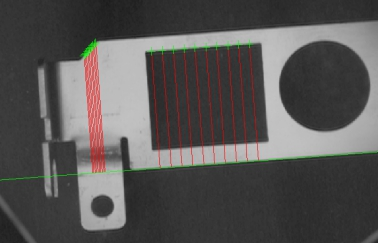
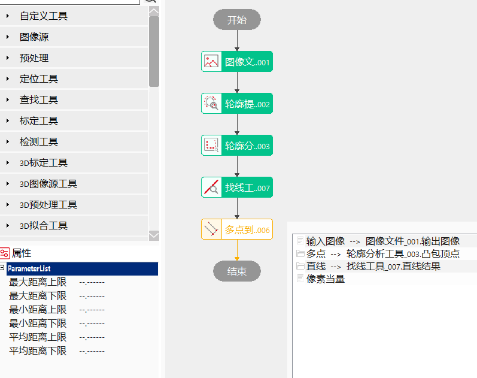
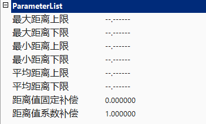
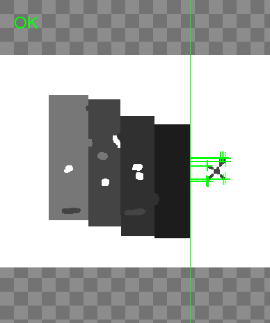
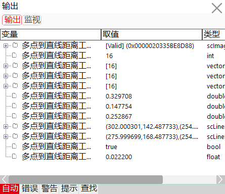

多点到直线距离工具的主要作用是计算图像上多个点到一条直线的垂直距离，并将图像上的距离换算成实际的距离。

常用于检测多个点位到边缘线的距离是否符合规格或要求。
距离计算方法
计算多点到直线的垂直距离，获取其中的最大距离，最小距离及平均距离值。


最大距离上限、最大距离下限
对于输出参数最大距离的有效范围进行设定，可取值范围为[0, 999999.999999]，另可设置为"–.——“,表示对最大距离上限或下限不进行限定。
使用距离值上限或/和距离值下限对最大距离数值的有效范围进行设定后，执行此测量工具。
当输出结果最大距离在设定的有效范围内时，显示工具执行结果成功；否则，显示工具执行结果失败。
最小距离上限、最小距离下限
针对最小距离有效范围限定。
其他与最大距离上/下限设置方法相同。
最小距离上限、最小距离下限
针对平均距离有效范围限定。
其他与最大距离上/下限设置方法相同。


| 现象描述 |
|---|
| 输入参数多点为输入点的数组，数据类型为vector \<sc2Vector>，该参数可以来自轮廓特征点定位工具、轮廓跟踪工具、轮廓分析工具、点匹配工具等。 |
| 参数名称 | 参数说明 |
|---|---|
| 输入图像 | 待测量多点到直线距离的图像。 |
| 多点 | 待计算距离的起始点。 |
| 直线 | 待计算距离的参考直线。 |
| 像素当量 | 每个像素代表的实际物理尺寸，单位mm。 |
| 最大距离上限 | 取值范围[0,999999.999999]，输出参数最大距离的上限阈值。 |
| 最大距离下限 | 取值范围[0,999999.999999]，输出参数最大距离的下限阈值。 |
| 最小距离上限 | 取值范围[0,999999.999999]，输出参数最小距离的上限阈值。 |
| 最小距离下限 | 取值范围[0,999999.999999]，输出参数最小距离的下限阈值。 |
| 平均距离上限 | 取值范围[0,999999.999999]，输出参数平均距离的上限阈值。 |
| 平均距离下限 | 取值范围[0,999999.999999]，输出参数平均距离的下限阈值。 |
| 距离值固定补偿 | 测量结果固定补偿。一般为0，用于补偿成像等系统误差。 |
| 距离值系数补偿 | 测量结果系数补偿。一般为1，用于补偿成像等系统误差。 |
| 高级界面 | 无 |
| 参数名称 | 参数说明 |
|---|---|
| 输入图像 | 待测量多点到直线距离的图像，供后续参数链使用。 |
| 像素点总数 | 参与计算距离的点的总数量。 |
| 输出结果 | 多点到直线距离的计算结果，包含点到直线的像素距离和实际距离、点到直线的垂直线段及测量终点等参数。 |
| 点到线距离 | 每一个参与计算的点到直线的实际距离结果。 |
| 线段 | 点到直线的垂直线段。 |
| 最大距离 | 多个点到直线的实际距离中的最大值。 |
| 最小距离 | 多个点到直线的实际距离中的最小值。 |
| 平均距离 | 多个点到直线的实际距离的平均值。 |
| 最大距离线段 | 到直线的距离最大的点到直线的垂直线段。 |
| 最小距离线段 | 到直线的距离最小的点到直线的垂直线段。 |
| 执行结果 | 工具执行结果，执行成功显示“OK”，执行失败显示“NG”，同监视窗口的执行结果参数。 |
| 执行时间 | 工具执行时间。 |
参见“\Samples\多点到直线距离工具.gvp”。